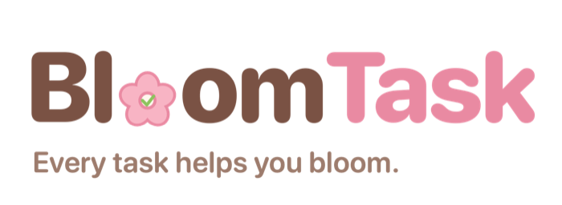

Support
Need help with BloomTask? We're happy to help.
Contact
Open an issue at GitHub Issues and we'll get back to you.
Restore purchases
Open BloomTask → Profile → BloomTask Plus → Restore Purchases. Use the same Apple ID you subscribed with.
Cancel a subscription
Open the Settings app → your name → Subscriptions → BloomTask, or tap Manage Subscription inside the app. Your tasks and companions are never deleted.
Widgets
Touch and hold your Home Screen or Lock Screen, tap Edit → Add Widget, and choose BloomTask.
Language
Profile → Settings → Language. The app switches instantly.
Destek
BloomTask ile ilgili yardım mı lazım? Memnuniyetle yardımcı oluruz.
İletişim
GitHub Issues üzerinden bize yazabilirsin, en kısa sürede dönüş yaparız.
Satın alımları geri yükleme
BloomTask → Profil → BloomTask Plus → Satın Alımları Geri Yükle. Abone olduğun Apple Kimliği ile giriş yapmış olmalısın.
Aboneliği iptal etme
Ayarlar → adın → Abonelikler → BloomTask yolunu izle ya da uygulamadaki Aboneliği Yönet'e dokun. Görevlerin ve dostların asla silinmez.
Widget'lar
Ana Ekran'a ya da Kilit Ekranı'na basılı tut, Düzenle → Widget Ekle'ye dokun ve BloomTask'ı seç.
Dil
Profil → Ayarlar → Dil. Uygulama anında yeni dile geçer.
サポート
BloomTaskについてお困りですか？お気軽にご相談ください。
お問い合わせ
GitHub Issues からご連絡ください。
購入の復元
BloomTask → プロフィール → BloomTask Plus → 購入を復元。購読時と同じApple IDをご利用ください。
サブスクリプションの解約
設定アプリ → お名前 → サブスクリプション → BloomTask、またはアプリ内の「サブスクリプションを管理」から。タスクや仲間が削除されることはありません。
ウィジェット
ホーム画面またはロック画面を長押しし、編集 → ウィジェットを追加 → BloomTaskを選択します。
言語
プロフィール → 設定 → 言語。すぐに切り替わります。
지원
BloomTask 사용에 도움이 필요하신가요? 기꺼이 도와드릴게요.
문의
GitHub Issues에 남겨 주시면 답변드릴게요.
구매 복원
BloomTask → 프로필 → BloomTask Plus → 구매 복원. 구독할 때 사용한 Apple ID로 로그인되어 있어야 합니다.
구독 해지
설정 앱 → 이름 → 구독 → BloomTask 또는 앱 안의 구독 관리를 누르세요. 할 일과 친구는 절대 삭제되지 않습니다.
위젯
홈 화면이나 잠금 화면을 길게 누르고 편집 → 위젯 추가 → BloomTask를 선택하세요.
언어
프로필 → 설정 → 언어. 즉시 바뀝니다.
支持
使用 BloomTask 遇到问题？我们很乐意帮忙。
联系我们
请在 GitHub Issues 提交问题，我们会尽快回复。
恢复购买
打开 BloomTask → 个人 → BloomTask Plus → 恢复购买。请使用订阅时的 Apple ID。
取消订阅
打开“设置” → 你的名字 → 订阅 → BloomTask，或在应用内点按“管理订阅”。你的任务和伙伴绝不会被删除。
小组件
长按主屏幕或锁定屏幕，点按“编辑” → “添加小组件”，然后选择 BloomTask。
语言
个人 → 设置 → 语言，立即切换。